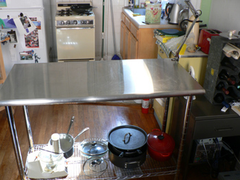

Our new kitchen island

Another score score from my favorite thrift shop yesterday: a stainless steel kitchen counter. I’ve coveted one of these for months, thinking it would be the perfect replacement for the standard Ikea cart that every other young person in New York owns. The cart has served me well over the years, and I’ll miss its drawers, but it was stained and chipped, and I never thought it was deep enough for tasks like rolling out dough, or anything that involves tossing flour. Depth seems more important than width in a kitchen counter for some reason, and this is two feet deep—seven inches deeper than the cart, and almost as deep as Mom’s new counter in Pittsburgh.
I yanked the $150 price tag off of this piece (that’s how you buy furniture at this place) in the nick of time—at least three people were circling it as I frantically discussed the purchase on the phone with Nathan. It fits comfortably into the “kitchen,” taking up barely more room than its predecessor, and with much more usable space. Even its single shelf seems to have more area than the cart’s two shelves combined (again with the depth!). I’m in the market now for another shelf to add. A third one up near the top would be perfect for baking sheets, lids, and other large, flat items. I’ll definitely be making a trip down to the Bowery in the coming days looking for a deal.
Comments
Congratulations!! It looks great! Yes, a trip to the Bowery is in order!
Wow, that’s really cool! And you can take it with you when you move because it will be useful anywhere.
You can buy S-hooks to hang stuff off the edges of the shelves, too, like when you put the higher shelf on, you might be able to hand small saucepans or colanders or at least potholders off of it.
Nice counter. But I’m fascinated by the fact that your oven, like ours, is isolated from any useful surfaces. At my best, I place a cutting board over two unused burners and work from there, at my worst I run across the kitchen with a handful of garlic while my oil gets too hot. How do you do it?
A great purchase, and as your Mum says, it can follow you everywhere. My problem with counters is that I keep allocating permanent space to stuff-like cannisters, oil cans, etc., eating up the work space. I need to get some discipline on that.
Your purchase looks neat. I know you will enjoy it for years to come. Being your is fun and you sound as if you are enjoying it.
I am suddenly filled with envy — and remorse, seeing as I have yet to set foot inside any of NYC’s thrift spots, despite living here 8 months.
Way to go Kid! Beautiful!
Thanks, everyone! I’m enjoying my table very much.
Mom: yes, I’m planning S-hooks already!
zp: I usually chop on the counter and then bring the cutting board over to the stove and push things into the pot (or I’m really smart and use bowls). I’d kill for counters on both sides of the burners.
Lindy: I have to stop myself from doing that, but it’s started already. Oh, the pasta maker looks cute here in the corner. But not as cute as the sugar jar in the other corner. And the measuring spoons right here. Awful!
Thanks, Janwes. Kristen: you should come down and see the places on 17th Street. I go every weekend, and I’d be happy to take you!
Thanks, grandma!
I love that counter. I have one similar to that which has about a four-inch backsplash on it. I was a partner at a salvage company and we took apart the old Navy Yard in DC and got the counter from their prep kitchen. My dog loves to lie on the shelf while I am working—it’s my desk in the kitchen.
It’s a great idea! For more kitchen islands and great ideas check out www.choppingblocks.com.
Add a comment